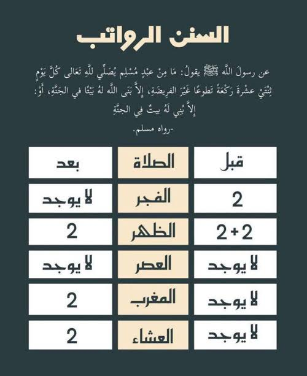

مرحبًا بكم في وذكر
السلام عليكم ورحمة الله وبركاته,اهلا بكم في موقعنا حيث نتشارك الأجر بالتقرب من الله
أذكار الصباح
ابدأ يومك بالأذكار الصباحية.
عن أم سلمة رضي الله عنها قالت: ما خرج النبي صلى الله عليه وسلم من بيتي قط إلا رفع طرفه إلى السماء فقال: اللهم إني أعوذ بك أن أضِل أو أُضَل، أو أزِل أو أُزَل، أو أظِلم أو أُظَلم، أو أجهل أو يجهل علي.
عن أنس بن مالك أن النبي صلى الله عليه وسلم قال: إذا خرج الرجل من بيته فقال: بسم الله توكلت على الله ولا حول ولا قوة إلا بالله قال: يقال حينئذ: هديت وكفيت ووقيت فتتنحى له الشياطين، فيقول له شيطان آخر: كيف لك برجل قد هدي وكفي ووقي
أذكار المساء
اختم يومك بالأذكار المسائية.
ومتنساش سورة الملك واخر ايتين من سورة البقرة

من قرأ آخر آيتين من سورة البقرة في ليلة كَفتاه.
قيل: كَفتاه شر تلك الليلة
وقيل: كَفتاه قِيامها.

عن أبي هريرة عن النبي صلى الله عليه وسلم قال: إن سورة من القرآن ثلاثون آية شفعت لرجل حتى غفر له، وهي سورة تبارك الذي بيده الملك.
ـ اشرب مياه كتير، سمي واشرب علي 3 مرات، لصحتك معظمنا مش بيشرب كويس وتاخد ثواب السنة
ـ انفض سريرك 3 مرات وانت جاي تنام وقول باسمك ربي وضعت جنبي وبك أرفعه، إن أمسكت نفسي فارحمها، وإن أرسلتها فاحفظها بما تحفظ به عبادك الصالحين، اللهم قني عذابك يوم تبعث عبادك ثلاث مرات، وأعوذ بكلمات الله التامات من شر ما خلق ثلاث مرات
ـ قال رسول الله صلِّ الله عليه وسلم (من قال حين يأوي إلى فراشِه : ( لا إله إلا اللهُ وحده لا شريك له ، له الملكُ ، وله الحمدُ ، وهو على كلِّ شيءٍ قديرٌ ، لاحولَ ولا قوةَ إلا بالله العليِّ العظيمِ ، سبحان اللهِ، والحمدُ لله ، ولا إله إلا اللهُ ، واللهُ أكبرُ ) ؛ غُفِرَتْ له ذنوبُه ولو كانت مثلَ زَبَدِ البحرِ)
القرآن الكريم
حافظوا علي الورد اليومي من قراءة القران ولو صفحة
عنْ أبي هريرة -رضي الله عنه: أنَّ رسول الله -صلى الله عليه وسلم- قال: يَجيءُ القرآنُ يومَ القيامةِ فيَقولُ: يا ربِّ حلِّهِ، فَيلبسُ تاجَ الكَرامةِ، ثمَّ يقولُ: يا رَبِّ زِدهُ، فيلبسُ حلَّةَ الكرامةِ، ثمَّ يقولُ: يا ربِّ ارضَ عنهُ، فيقالُ لَهُ: اقرأْ وارْقَ، وتزادُ بِكُلِّ آيةٍ حسنةً.
في صحيح مسلم أن النبي -صلى الله عليه وسلم- قال: اقرؤوا القرآن فإنه يأتي يوم القيامة شفيعا لأصحابه، اقرؤوا البقرة وآل عمران، فإنهما يأتيان يوم القيامة كأنهما غمامتان، أو غيايتان، أو فرقان من طير صواف، تُحاجَّان عن صاحبهما يوم القيامة.
نصائح يومية
* حاول باللي تقدر عليه فيومك *
- 1- الورد اليومي من القرآن الكريم
- 2ـ قيام الليل والدعاء وتحسين علاقتك مع ربنا
- 3- الأذكار وسورة الملك واخر ايتين من سورة البقرة
- 4ـ اشرب مياه كتير، سمي واشرب علي 3 مرات، لصحتك معظمنا مش بيشرب كويس وتاخد ثواب السنة
- 5ـ انفض سريرك 3 مرات وانت جاي تنام وقول باسمك ربي وضعت جنبي وبك أرفعه، إن أمسكت نفسي فارحمها، وإن أرسلتها فاحفظها بما تحفظ به عبادك الصالحين، اللهم قني عذابك يوم تبعث عبادك ثلاث مرات، وأعوذ بكلمات الله التامات من شر ما خلق ثلاث مرات
- 6ـ قال رسول الله صلِّ الله عليه وسلم (من قال حين يأوي إلى فراشِه : ( لا إله إلا اللهُ وحده لا شريك له ، له الملكُ ، وله الحمدُ ، وهو على كلِّ شيءٍ قديرٌ ، لاحولَ ولا قوةَ إلا بالله العليِّ العظيمِ ، سبحان اللهِ، والحمدُ لله ، ولا إله إلا اللهُ ، واللهُ أكبرُ ) ؛ غُفِرَتْ له ذنوبُه ولو كانت مثلَ زَبَدِ البحرِ)
قيام الليل كنز متضيعوش من ايدك كل يوم فرصة تقربك لربنا اكتر بعيد عن باقي ضغوطات اليوم ولو بركعة انت اولي بكل فرصة تقربك لربنا اكتر واكتر وكلنا بنسعي وبنحاول نكون افضل وكلنا بندعيربنا وبنتمني حاجات منه مهما اختلف بس كلنا عندنا اللي بنحلم بيه ,استغل القرصة دي وادعي ربنا باللي بتتمناه فهدوء وسكينة الليل ويا سلام لو كانت فالثلث الاخير من الليل قبل الفجر, من حديث أبي هريرة رضي الله عنه قال: قال رسول الله صلى الله عليه وسلم: ينزل ربنا تبارك وتعالى كل ليلة إلى السماء الدنيا حين يبقى ثلث الليل الأخير، فيقول: من يدعوني فأستجيب له من يسألني فأعطيه من يستغفرني فأغفر له.
حاول دايما تخلي دا روتين وجزء من يومك وحاول تخلي في وقت برضه لدرس او بودكاست ديني يفيدك فطريقك فمواصلات او وقت فراغ كل البودكاستس اللي هذكرها موجودة برضه علي سبوتياي وكاست بوكس ومعظم برامج البودكاست
ادعولي باللي بتمناه ولكم بالمثل ان شاء الله ,عن أبي الدرداء رضي الله عنه قال: قال رسول اللهِ صلى الله عليه وسلم: (مَا مِنْ عَبْدٍ مُسْلِمٍ يَدْعُو لأَخِيهِ بِظَهْرِ الْغَيْبِ، إِلاَّ قَالَ الْمَلَكُ: وَلَكَ بِمِثْلٍ) رواه مسلم
تقبل الله منا ومنكم صالح الاعمال
مواقيت الصلاة
يقول الله تعالى: {إِنَّ الصَّلاةَ كَانَتْ عَلَى الْمُؤْمِنِينَ كِتَابًا مَوْقُوتًا} [النساء:١٠٣]
{حافِظُوا عَلَى الصَّلَوَاتِ وَالصَّلَاةِ الْوُسْطَىٰ وَقُومُوا لِلَّهِ قَانِتِينَ} (البقرة :238)
جاري تحميل مواقيت الصلاة...
يريت نختم الصلاة كمان بعد ما نصلي ونصلي السنن الرواتب لكل فرض
من حديث أبي أمامة الباهلي رضي الله عنه قال: قال رسول الله صلى الله عليه وسلم: من قرأ آية الكرسي دبر كل صلاة لم يمنعه من دخول الجنة إلا أن يموت.

عن أبي هريرة عن النبي صلى الله عليه وسلم قال: إن أول ما يحاسب الناس به يوم القيامة من أعمالهم الصلاة، قال: يقول ربنا عز وجل لملائكته، وهو أعلم: انظروا في صلاة عبدي أتمها أم نقصها، فإن كانت تامة، كتبت له تامة، وإن كان انتقص منها شيئًا، قال: انظروا، هل لعبدي من تطوع؟ فإن كان له تطوع، قال: أتموا لعبدي فريضته من تطوعه، ثم تؤخذ الأعمال على ذاكم.